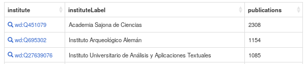
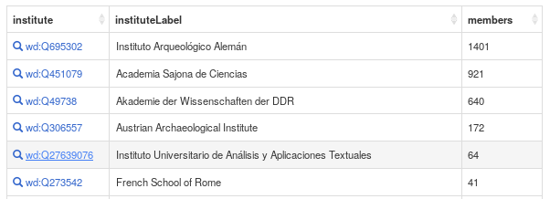
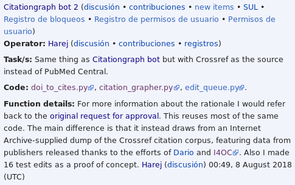

Curación y estructuración de la producción científica del IATEXT en Wikidata
Wikidata, WikiCite y Scholia como herramientas para elaborar un corpus de datos bibliográficos enlazados
Iván Hernández-Cazorla
Manuel Ramírez-Sánchez
Gregorio Rodríguez-Herrera

Un poco de historia
Wikidata-IATEXT
Motivación
Open Science y Open Data
Corpus de datos enlazados
↓
Perfiles científicos
↔
Datos bibliográficos
Estado previo
| En torno a... | |
| 4300 institutos de investigación en Wikidata. | 86 institutos de investigación con al menos 1 investigador enlazado con la propiedad «miembro de» (P463) |
| 25 institutos universitarios con al menos una publicación enlazada a uno de sus miembros. | |
Estado actual
 Metodología
| Fases | |
| Investigaciones | Publicaciones |
| Elementos útiles y necesarios para enlazar los elementos entre sí y enriquecer los datos | |
| Fuentes principales usadas como referencias | ||
| Sitios web | Dialnet | Acceda |
| Principalmente listas sin una estructura definida. | Modelo estandarizado. Sin posibilidad de realizar una extracción automática |
Repositorio con potencial. Poca consistencia y fiabilidad de los datos |
Resultados
Herramientas útiles para obtener los resultados:
- Listeria y el Wikidata Query Service.
exporter.py, para extraer los datos en RDF/Turtle. Uso dewikidata-clipara las consultas.
Sumado a lo anteriormente mencionado:
- 43 429 ediciones. 1689 elementos editados, de los que 1430 fueron creados.
- De lo anterior, 1080 son publicaciones de miembros del IATEXT.
Conclusiones
Scholia: visualización de datos de los elementos insertados en el corpus bibliográfico
Todos los investigadores pueden ser visualizados.
Pero no ha sido posible añadir todas las publicaciones.
Paneles bastante completos para la organización (Q27639076) y los autores.
El panel citations es el más flojo:
Solo 7 artículos con citas
Sobre las citas
No se planeó añadir las citas durante este proyecto, por lo que no se añadió su respectiva propiedad.
¿Quién enlazó estos elementos entre sí con la P2860 («Referencia»)?
+
¿Cómo se puede utilizar este corpus?
Presentación disponible en https://ivanhercaz.com/p/talks.html
Realizada con reveal.js (framework JavaScript desarrollado por Hakim El Hattab).